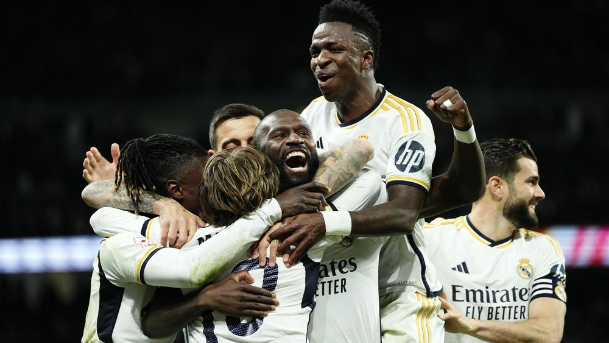

Real Madrid

Retour
Quand on parle ou que l’on pense à la Ligue des champions, c'est le club qui nous vient tout de suite en tête. Vainqueur à quatorze reprises de la compétition et ayant compté dans ses rangs certaines des plus grandes légendes du football, le Real Madrid est indissociable de la coupe aux grandes oreilles et de son histoire. Retour sur l’histoire d’amour entre le plus grand club du monde et la plus prestigieuse compétition européenne.
Quel est le bilan du Real Madrid en Ligue des Champions ?
Quand on dit que la Ligue des Champions est la compétition du Real Madrid, on ne croit pas si bien dire. En effet, la Casa Blanca en est à sa 43ème apparition dans la compétition reine, pour 14 titres. Au total, les Merengues comptabilisent :
482 matches
291 victoires
81 matchs nuls
110 défaites
Les pensionnaires du Santiago Bernabeu comptabilisent ainsi 60 % de victoires en Ligue des Champions.
Avant de revenir sur les 14 titres du club dans la compétition, intéressons-nous également aux adversaires que le Real Madrid a rencontré le plus souvent et le bilan du club face à eux (cette liste prend en compte les doubles confrontations ainsi que les matchs uniques) :
Vs Bayern Munich : 13 fois (12 victoires - 3 nuls - 11 défaites)
Vs Juventus Turin : 11 fois (10 victoires - 2 nuls - 9 défaites)
Vs Inter Milan : 10 fois (7 victoires - 1 nul - 5 défaites)
Vs Milan AC : 9 fois (6 victoires - 3 nuls - 6 défaites)
Vs Ajax Amsterdam : 7 fois (8 victoires - 1 nul - 5 défaites)
Les 14 titres du Real Madrid en Ligue des Champions
En plus de 120 ans, le Real Madrid a marqué l’histoire du championnat espagnol en remportant la Liga à 35 reprises, mais a surtout marqué l’Europe en devenant le détenteur du plus grand nombre de titres en Ligue des Champions avec 14 soulevés de coupe aux grandes oreilles. C’est deux fois plus de titres que le Milan AC et 14 titres de plus que le PSG.
Retour sur les 14 titres de Champions League, ancien et nouveau format confondus, du Real Madrid :
1956/1957 : victoire 4-3 face au Stade de Reims
1956/1957 : victoire 2-0 face à la Fiorentina
1957/1958 : victoire 3-2 face au Milan AC
1958/1959 : victoire 2-0 face au Stade de Reims
1959/1960 : victoire 7-3 face à l’Eintracht Francfort
1965/1966 : victoire 2-1 face au Partizan Belgrade
1997/1998 : victoire 1-0 face à la Juventus Turin
1999/2000 : victoire 3-0 face au FC Valence
2001/2002 : victoire 2-1 face au Bayer Leverkusen
2013/2014 : victoire 4-1 face à l’Atlético de Madrid
2015/2016 : victoire 1-1 (5-3 aux tirs aux buts) face à l’Atlético de Madrid
2016/2017 : victoire 4-1 face à la Juventus Turin
2017/2018 : victoire 3-1 face au Liverpool FC
2021/2022 : victoire 1-0 face au Liverpool FC
Plus impressionnant encore, le Real Madrid a atteint la finale de la Ligue des champions à 17 reprises, en 43 campagnes, cela veut dire que la Casa Blanca a remporté 82 % des finales qu’il a jouées. Domination.
Combien de buts ont été marqués par le Real Madrid et qui est le meilleur buteur du club dans la compétition ?
Si le Real Madrid est détenteur du record du nombre de matchs, du nombre de victoires, du nombre de défaites, du nombre de matchs nuls, il est également détenteur du record du nombre de buts marqués et du nombre de buts encaissés dans la compétition. On ne le répètera jamais assez, mais la Ligue des Champions c’est vraiment la compétition du Real Madrid.
Ainsi, en 482 matchs, le Real Madrid a marqué la bagatelle de 1063 buts pour 528 buts encaissés. Autrement dit, la Casa Blanca a marqué environ 2,2 buts par match pour 1,09 but encaissé par match.
Découvrez le top 10 des meilleurs buteurs de la compétition (Ligue des Champions - Coupe des clubs champions, confondues) sous le maillot blanc :
Cristiano Ronaldo : 105 buts (soit 9,8 % des buts du Real Madrid en Ligue des Champions)
Karim Benzema : 78
Raúl Gonzalez : 66
Alfredo Di Stéfano : 49
Ferenc Puskás : 34
Francisco “Paco” Gento : 32
Carlos Santillana : 22
Amancio Amaro Varela : 21
José Martínez “Pirri” Sánchez : 19
Rodrygo : 18
Actuellement, seul Rodrygo est encore un joueur actif du Real Madrid. Cristiano Ronaldo et Karim Benzema se sont envolés pour l’Arabie Saoudite, respectivement à Al-Nassr et à Al-Ittihad.